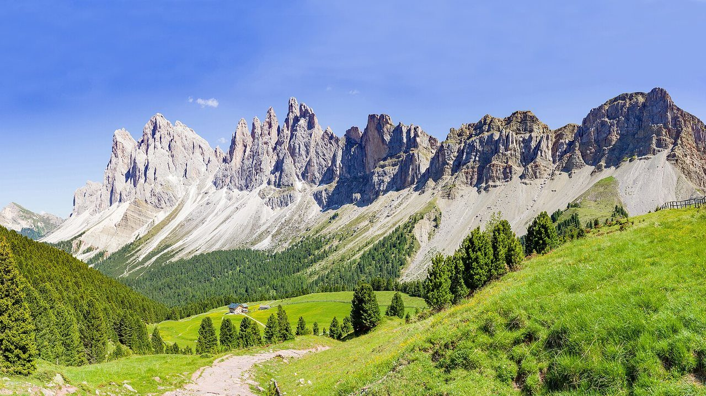

Race, Dolomites

Behind
Best +0:01
371W
Target 418 W-47 W
- Cadence
- 87rpm
- Heart
- 140bpm
- Speed
- 26.5km/h
Recover11 of 17
1:32
Next: · 0:30 at level 24
-2.5%
598 m climbed
23.50 km
6
Resistance / 32
Solo races your best-time ghost: position reads Ahead or Behind, and solo alone gets a Pause button. Frozen at 17:58.